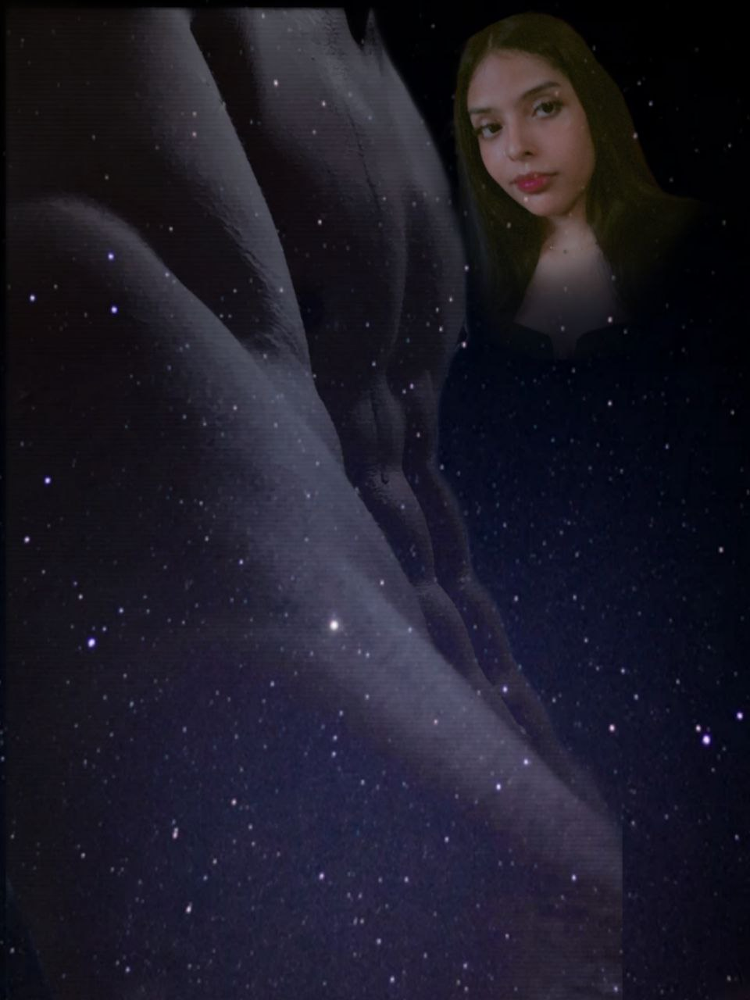
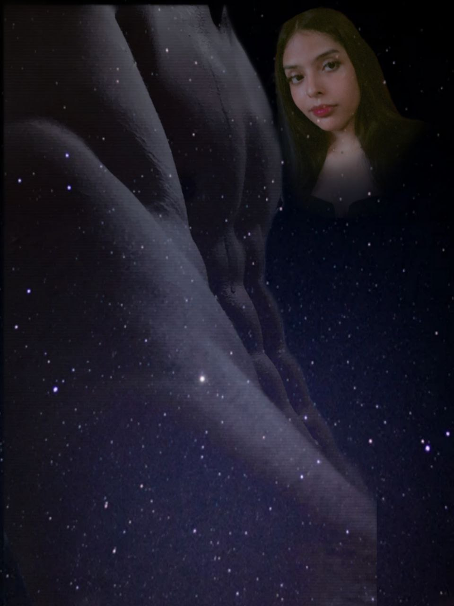

Más allá de los 1200 KM
"Esto es para ti, por tus 20 años, para que nunca olvides cómo empezamos."
Capítulo 1: El Comienzo de Todo
Todo empezó como una distracción, un usuario más en una pantalla. Pero pronto, esos mensajes se convirtieron en la primera cosa que quería leer al despertar. Fue el momento en que dejamos de ser extraños para convertirnos en el refugio del otro, sin importar la latencia ni la distancia.
Capítulo 2: Una Amistad que Rompió Barreras
Antes de cualquier otra cosa, fuimos cómplices. Aprendimos a conocernos sin vernos, a entendernos sin tocarnos. Las barreras geográficas se quedaron pequeñas ante las horas de charlas, las risas compartidas y esa confianza que solo se encuentra una vez en la vida.
Capítulo 3: Un Sentimiento que se hizo Fuerte
Lo que empezó como una conexión digital se transformó en algo que ya no podíamos ignorar. El corazón no entiende de mapas ni de fronteras; solo entiende de quién lo hace latir más rápido. Y ahí estabas tú, del otro lado de la pantalla, volviéndote mi prioridad absoluta.
Capítulo 4: El Deseo de un Encuentro
Este capítulo aún no se termina de escribir con tinta, pero se escribe cada día con ganas. Es el sueño de acortar los kilómetros, de que el "hola" ya no sea por audio, sino de frente. Es la promesa de que todo este tiempo esperando valdrá la pena en el segundo en que por fin estemos en el mismo lugar.
Capítulo 5: 1200 KM de Insomnio
Llegamos a tus 20 años. Quizás hoy no estoy ahí para darte el abrazo que te debo, pero estoy en cada palabra de este código y en cada nota de nuestra canción. No importa la distancia, cada noche juntos estamos más unidos. Felices 20, Melón.
Capítulo 6: El Laberinto de las Palabras
A veces, el silencio no es ausencia, es protección. Me enseñaste que ser impulsiva es parte de tu fuego, y que cuando te encierras en tu frase de "hablamos cuando me sienta mejor", no estás huyendo de mí, estás cuidándonos de tus propias palabras. Entendí que amarte también es respetar tus retiros y tus batallas contra esos problemas que, para mí, nunca serán bobadas si te duelen a ti.
Capítulo 7: Espejos y Karmas
Me hablaste de pasados que muerden y de situaciones que hoy se sienten como un eco. Me confesaste tus miedos: el miedo a que yo te trate diferente o que me aleje al conocer tu carácter. Pero ver tu verdad, sin filtros, solo me hizo admirar más a la mujer que eres. No busco a alguien perfecta, te busco a ti.
Capítulo 8: El Compromiso del "No Cambiar"
"Tú sí lo vas a hacer", me dijiste con ese miedo de quien ha sido defraudado. Pero aquí sigo, escuchando tus audios y procesando cada pensamiento. Prometí no tratarte diferente, y cumplo. Tu verdad no me lastima; la verdad es lo único que nos hace reales.
Capítulo 9: El Espejo del Pasado
Me confesaste que antes no entendías a quienes hablaban con tanto afecto sabiendo que no estarían juntos. Aprendimos que el cariño no siempre sigue la lógica de los mapas, y que a veces, lo que más nos gusta de alguien es precisamente lo que nos hace dudar.
Capítulo 10: Señales en el Insomnio
"Cada video que veas, tómalo como una señal", me dijiste. Entre videos y mensajes a las 6 de la mañana, encontramos nuestro lenguaje. Esos momentos donde la guardia baja son los cimientos de lo que somos hoy. Me pediste que no cambiara, y mi respuesta sigue siendo la misma: aquí estaré.
Capítulo 11: La Incertidumbre Feliz
"¿Qué sucederá después? Ni yo sé", fue tu respuesta. Y en ese "no sé" encontré paz. No tenemos todas las respuestas, pero mientras tanto, me quedo con tu tranquilidad después de haber soltado lo que tenías guardado. Estoy feliz por ti, por nosotros, y porque a pesar de las dudas, te quiero un poquito más.
[ Continúa... ]

 
